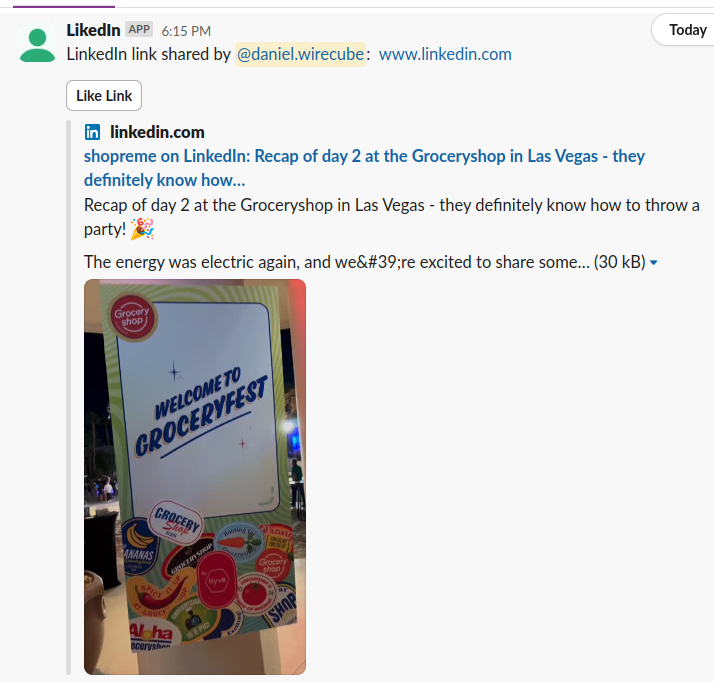

My account has been restricted after developing and extensively testing this, since it uses puppeteer and I believe this whole project violates LinkedIn's terms of service.
This Slack bot allows users to automatically like LinkedIn posts directly from Slack. It uses a combination of Slack's Bolt framework, Puppeteer for web automation, and SQLite for data storage.
Clone the repository:
git clone https://github.com/yourusername/linkedin-post-liker-slack-bot.git cd linkedin-post-liker-slack-bot
Install dependencies:
pnpm install
Set up environment variables:
Create a .env file in the root directory and add the following:
SLACK_BOT_TOKEN=your_slack_bot_token
SLACK_SIGNING_SECRET=your_slack_signing_secret
SLACK_APP_TOKEN=your_slack_app_token
ENCRYPTION_KEY=your_encryption_key
Make sure you have Docker and Docker Compose installed on your system.
Build and start the containers:
docker-compose up --build
The bot should now be running and connected to your Slack workspace.
To stop the bot, use:
docker-compose down
If you need to view the logs, use:
docker-compose logs
To run the bot in detached mode (in the background), use:
docker-compose up -d
In Slack, use the following commands:
/set-linkedin-cookie to set your LinkedIn authentication cookie: li_at retrieved from your browser/likedin [LinkedIn post URL] to share a LinkedIn postapp.ts: Main application fileslackHandlers.ts: Slack event handlersdb.ts: Database operationsliker.ts: LinkedIn post liking functionalitylogger.ts: Logging configurationSet cookie
LikedIn
This project is licensed under the MIT License - see the LICENSE file for details.